library(ggplot2movies)
mv <- movies |>
filter(length <= 200, length > 10,
year > 1918, votes >= 5)Week 8: additive models, trees and ensembles
LSE
Part 1: fitting an additive model
Part 2: plots for other models
Part 3: building a tree
Part 4: three model improvement strategies
Part 5: feature importance
Last time: each modeling assumption makes some models work well, and cross-validation tunes their knobs
Name one modeling assumption, and a model that works well when it holds
IMDb films up to 2005, 53,388 after this selection (data note)
rating, average user rating, 1 to 10year, length (minutes), seven genre flagsvotes, r1 to r10 (from the same ratings)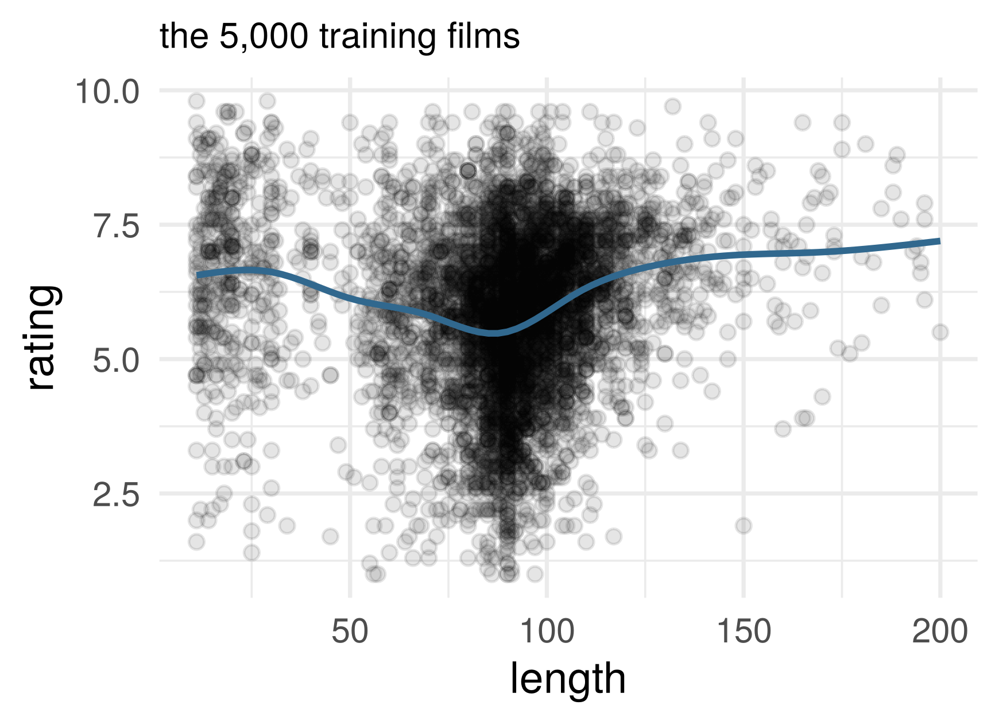
A random 10,000: 5,000 training, 2,000 tuning, 3,000 test
s is a penalized spline, but can use different methods too
# A tibble: 2 × 5
term edf ref.df statistic p.value
<chr> <dbl> <dbl> <dbl> <dbl>
1 s(length) 6.08 7.16 47.9 0
2 s(year) 8.01 8.71 29.3 0No single slope per input: how do we interpret the fitted curves?
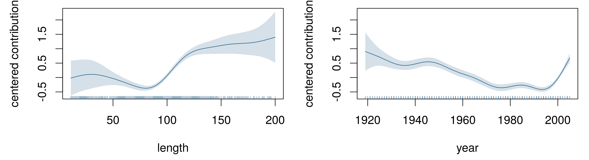
The cost of a non-free lunch: a sum of a fixed number of Lipschitz one-input curves (additivity, plus design conditions) has the one-input rate, \(n^{-2/3}\).
We know how to fit a spline to one input: least squares on its basis matrix. How could we fit a model with a curve for each of several inputs?
Set \(\hat \beta_0 = \bar y\) and start with some initial estimates \(\hat f_j\), e.g. \(\hat f_j = 0\) or from y ~ x_j
Iterate over \(j\), updating \(\hat f_j\) by fitting r_j ~ x_j where the partial residual \(\mathbf r_j = \mathbf y - \hat \beta_0 - \sum_{k \neq j} \hat f_k(\mathbf x_k)\) is computed using the current fits for all the other predictors; then center \(\hat f_j\) (subtract its mean over the data)
Repeat until “convergence” (some stopping rule)
Two centered inputs and lines for components, \(\hat f_j(x) = \beta_j x\). Step 2 for \(j = 1\) regresses the partial residual on \(\mathbf x_1\): \[ \beta_1 \leftarrow \frac{\mathbf x_1^T(\mathbf y - \beta_2 \mathbf x_2)}{\mathbf x_1^T \mathbf x_1}, \qquad \beta_2 \leftarrow \frac{\mathbf x_2^T(\mathbf y - \beta_1 \mathbf x_1)}{\mathbf x_2^T \mathbf x_2} \]
The loop can stop only where both hold: \(\mathbf x_j^T(\mathbf y - \beta_1 \mathbf x_1 - \beta_2 \mathbf x_2) = 0\) for \(j = 1, 2\). These are the normal equations: the fixed point is least squares
Partialling-out theorem: the coefficient on \(\mathbf x_2\) is \(\tilde{\mathbf x}_2^T \mathbf y / \tilde{\mathbf x}_2^T \tilde{\mathbf x}_2\), the slope on what is left of \(\mathbf x_2\) after \(\mathbf x_1\) has explained what it can.
With a smoother in place of each line, the same loop fits an additive model: each curve fitted to what the others leave
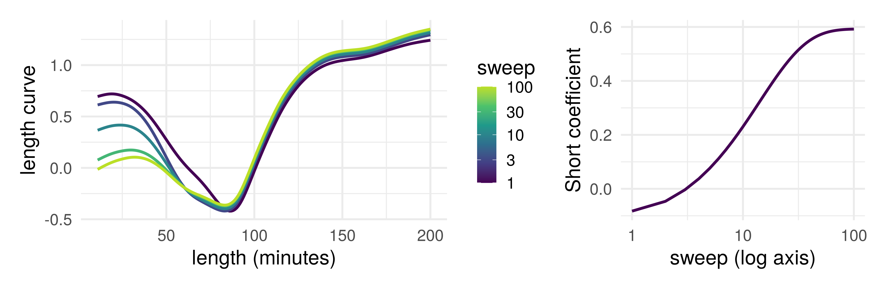
Length, year and Short on the training films, starting from zero. Length and Short are closely related: each sweep moves a little more of the shorts’ higher ratings from the length curve to the Short coefficient, which settles after about 70 sweeps
Any number of inputs. With one coefficient per input, each update minimizes the RSS over that coefficient with the others held fixed: coordinate descent (Gauss–Seidel, in numerical linear algebra). It converges to least squares: in one sweep for orthogonal inputs, slowly for strongly related ones
Gram–Schmidt partials out the other way round: it residualizes each input on the ones before it, once. Backfitting leaves the inputs alone and residualizes \(\mathbf y\), again and again
Partialling out with flexible fits. Residualize both \(\mathbf y\) and \(\mathbf x_j\) on the other inputs, with any regression method, then regress residual on residual: double machine learning, later in the course
Interpretation: think carefully about calculus and causality (causality: later in the course). To simplify let’s consider the identity link function (rather than e.g. logistic regression, those cases are more complicated)
Does the CEF really decompose into additive terms? Is this approximation good:
\[ \frac{\partial}{\partial x_j} \mathbb E[Y | \mathbf X] \approx g(x_j) \] Or does the relationship between the average of \(Y\) and \(x_j\) vary depending on the value of another predictor \(x_k\)?
If the slope in length changes with year, the derivative of \(\mathbb E[\text{rating} \mid \text{length}, \text{year}]\) in length depends on year too, and an additive model is misspecified. Non-shorts, by decade:
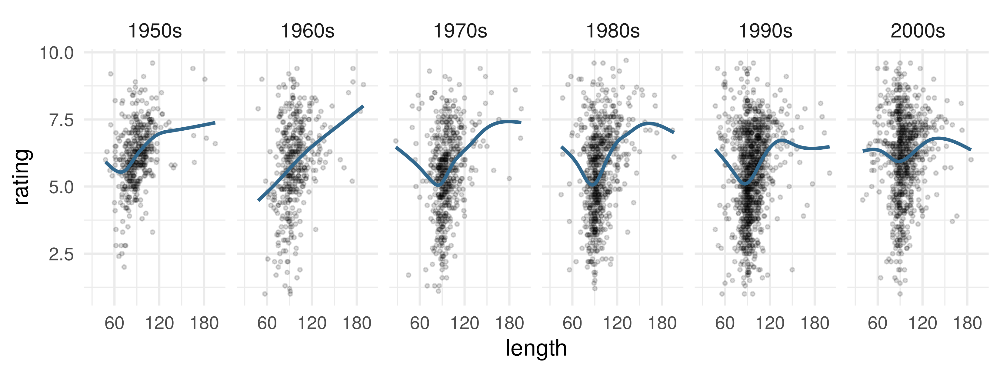
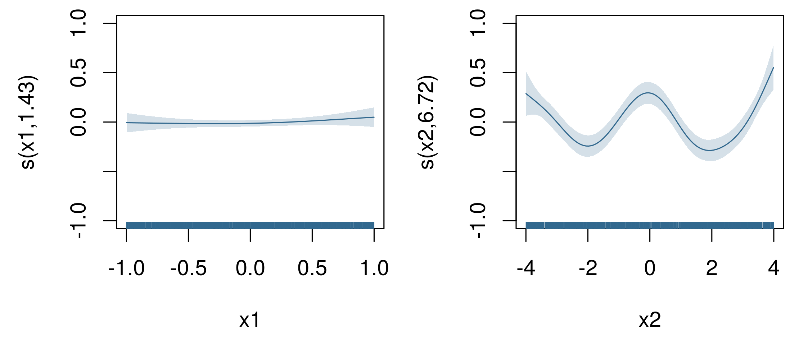
The fitted component for \(x_1\) is nearly flat: a parabola opening upward when \(\cos(\pi x_2/2) > 0\) and downward when \(\cos(\pi x_2/2) < 0\) cancel when averaged over \(x_2\)
Additivity assumption is now (importantly) wrong
A forest fitted to these data can hold the interaction, but it has no components: \(\hat f(x_1, x_2)\) is one function of both inputs
We want a plot of how \(\hat f\) depends on \(x_1\). What do we do with \(x_2\) while we draw it?
Write down one way, and what that plot could hide.
For models with multiple predictors, partial dependence plots can hide model structure. Options for the other variables:
plotmo defaultpdp methodice methodUnit \(i\)’s inputs with input \(j\) set to a value \(\tilde x_j\): \(\;\tilde{\mathbf x}_{ij} = (x_{i1}, \ldots, \tilde x_j, \ldots, x_{ip})\) \[ \mathrm{ICE}_i:\ \tilde x_j \mapsto \hat f(\tilde{\mathbf x}_{ij}), \qquad \mathrm{PDP}_j:\ \tilde x_j \mapsto \frac1n \sum_{i=1}^n \hat f(\tilde{\mathbf x}_{ij}) \]
A modified unit may resemble no real unit
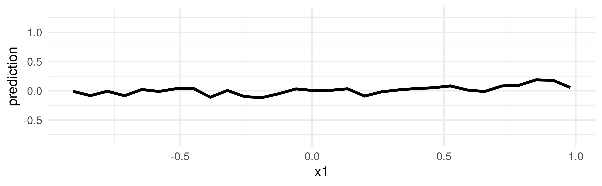
Black: the PDP, the forest’s prediction averaged over the 100 units with \(x_1\) set and \(x_2\) left at each unit’s value. Nearly flat
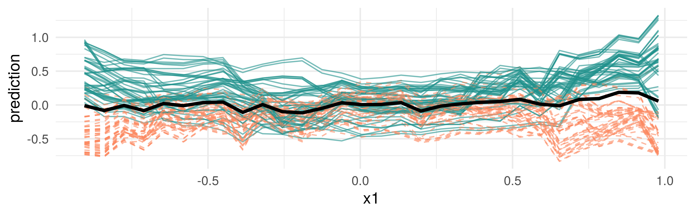
Thin: one curve per unit (ICE), solid where \(\cos(\pi x_2/2) > 0\), dashed where it is negative. The forest fitted the interaction; the average hides it
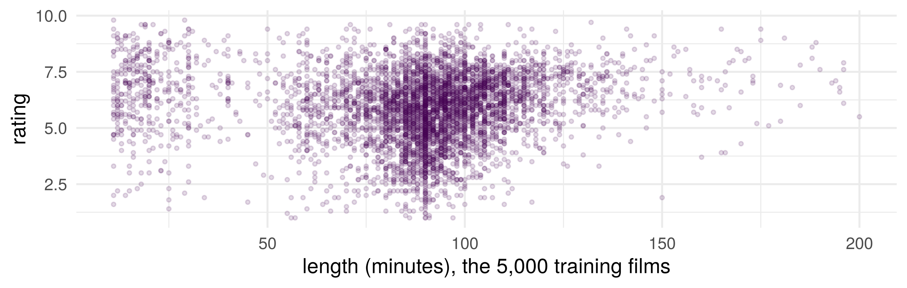
One question about length, then one constant on each side. Write down your cutoff.
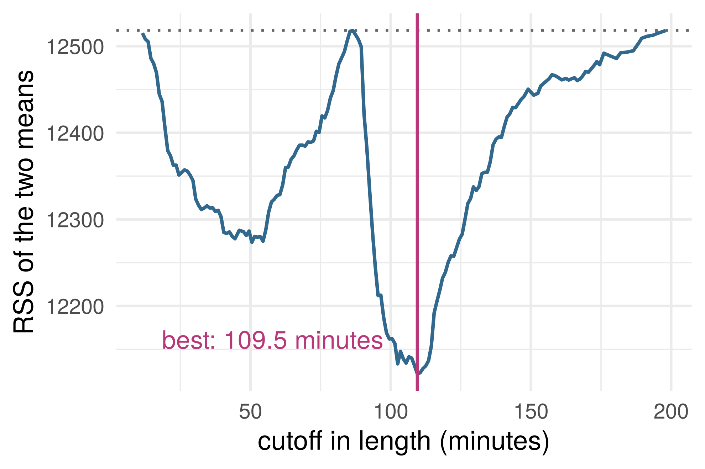
Every cutoff between two films, scored by the RSS when each side predicts its own mean
Each side of a split is a leaf (until it is split again)
Then every input; keep the best; then recurse into each leaf. Greedy: each split is the best now
For a label: the same search, scoring each split by its leaves’ Gini indices \(\sum_k \hat p_k (1 - \hat p_k)\), weighted by leaf size
Split until no leaf can split, and a tree is like 1-nearest neighbors: 2,857 leaves on year and length alone
Greedy splitting: each split is the best now, and stopping early can miss a weak split that enables a strong one below it. So grow a large tree
Overfitting: then prune. Of the many sub-trees, take only the path of minimizers of \[RSS(\text{Sub-tree}) + \alpha\, |\text{Sub-tree}|, \qquad \alpha \geq 0\] and choose \(\alpha\), and so a sub-tree, by validation
\(k\) nearest neighbors average the \(k\) training points closest to \(x_0\); a tree averages those in \(x_0\)’s leaf, a neighborhood chosen by the data
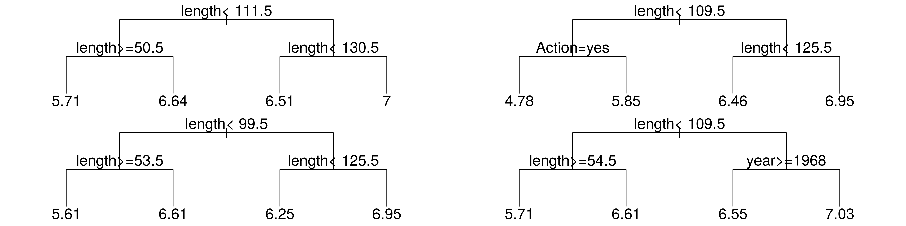
Depth 2, each on a random half of the training films. The Shawshank Redemption (rated 9.1): predicted 7.00, 6.95, 6.95, 6.55
Same method, same films, four different models. What should we do about this?
Sacrifice simplicity/interpretability for prediction accuracy
Can be used with other models too, not just trees
Problem: a single tree model can have high variance (like many non-smooth or non-regularized models)
Bootstrap: for each \(b = 1, \ldots, B\) resamples (with replacement) of the training data, fit \(\hat f^{*b}\) on bootstrap sample \(b\)
Aggregate: combine the \(B\) models, using majority vote for classification or mean for regression
\[\hat f_\text{bag} = \frac{1}{B} \sum_{b=1}^B \hat f^{*b}\]
(“Smoothing” useful for low-bias, high-variance models)
Average \(B\) trees’ predictions at one input \(x\)
What is the variance of their average if the \(B\) trees are
The variance of a sum is every variance plus every covariance, \(B\) terms \(\tau^2\) and \(B(B - 1)\) terms \(\rho\tau^2\): \(\;\mathrm{Var}\big(\sum_{b} V_b\big) = B\tau^2 + B(B - 1)\rho\tau^2\)
Correlated-average variance. \(V_1, \ldots, V_B\), each with variance \(\tau^2\), every pair with correlation \(\rho\): \[ \mathrm{Var}\Big(\frac1B \sum_{b=1}^B V_b\Big) = \rho\,\tau^2 + (1 - \rho)\,\frac{\tau^2}{B} \]
Proof: divide by \(B^2\) and regroup, \(\frac{\tau^2}{B} + \frac{B - 1}{B}\rho\tau^2 = \rho\tau^2 + (1 - \rho)\frac{\tau^2}{B}\). Bagging shrinks the second term; \(\rho\tau^2\) stays, since bootstrap trees grown from one sample are alike
\(B\) is already 300. Which term of the correlated-average variance is left, and how could we make it smaller?
Problem: aggregation does not increase information if the aggregates are highly correlated, e.g. averaging 1000 trees but each one uses the same small set of predictor variables
Drop predictors randomly, at every split
e.g. each split chooses among a random \(\sqrt{p}\) of the \(p\) predictors
Aggregate models which are now (typically) less correlated, achieving greater variance reduction
Each bootstrap sample contains some subset of the training data
Roughly \(1/e \approx 0.37\) portion of the training samples will be left out of each bootstrap sample
Can use these to estimate test error (e.g. instead of \(K\)-fold cross-validation)
Software implementations may do this automatically
| A forest on the films, 300 trees | MSE |
|---|---|
| training films, every tree | 1.61 |
| training films, out-of-bag trees only | 2.03 |
| tuning films | 2.03 |
| tuning films, predicting the training mean | 2.50 |
A forest grows its trees separately and averages them. Now grow them one after another and add them up: after \(b\) trees the fit is \(\hat f^{(b)}\), the sum so far
We may add one small tree to \(\hat f^{(b)}\). What should it predict?
Idea: train models sequentially, decreasing residuals by a small amount each time. Each model contributes something different
Can use “weak learners” (e.g. trees with one split, “stumps”) to grow an ensemble model gradually fitting closer to the training data
Gradient descent: small step in direction of negative gradient
Boosting: small step in direction of weak learner closest to negative gradient
Instead of computing gradients, we reduce the loss by taking a small step in the direction of a weak learner: a simple, low-cost model
Optional additional reading: ESL Chapter 10
Gradient descent moves parameters. Take the \(n\) fitted values \(f(x_1), \ldots, f(x_n)\) as the parameters, with squared loss \(L(f) = \frac12 \sum_{i=1}^n \big(y_i - f(x_i)\big)^2\): \[ -\frac{\partial L}{\partial f(x_i)} = y_i - f(x_i): \quad \text{the negative gradient is the residual vector} \]
A step along it moves only those \(n\) values. Fit a small tree to the residuals instead (defined at every \(x\)), and step along the tree, with learning rate \(\gamma\): \[ \hat f^{(0)} = \bar y, \qquad \hat f^{(b)} = \hat f^{(b-1)} + \gamma\, \hat t_b, \qquad \hat t_b \text{ a small tree fitted to } y_i - \hat f^{(b-1)}(x_i) \]
Gradient descent, stopped early: the number of steps is a knob. Backfitting replaced a curve; boosting adds a tree, fitted to what the sum leaves.
Number of trees/steps \(B\), complexity of each tree/model \(d\), regularization/learning rate \(\gamma\). Warning: can now overfit with large \(B\) (unlike bagging/r.f.)
Software may choose them automatically. No guarantee it’s reasonable!
Bagging and forests start with large trees, which have high variance individually, and average them to lower the variance. Boosting starts with weak learners like tree stumps, which have high bias individually, and fits iteratively on residuals to lower the bias
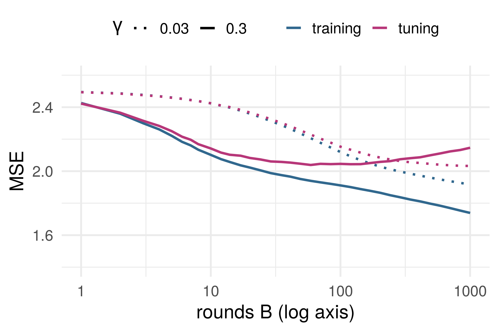
Rounds \(B\). Training error keeps falling; tuning error turns. Stopping there is early stopping, as for gradient descent
Learning rate \(\gamma\). Smaller steps, more of them; often a lower minimum, not always
Depth. How many inputs one tree can combine (next)
Can a tree with one split fit \(f(x_1, x_2) = x_1 x_2\) well? Hint: assume the inputs are independent, both \(\mathrm{Unif}[-1, 1]\)
How many splits would we want for \(f = x_1 \cdots x_p\)?
A stump asks one question, so a sum of stumps is a sum of one-input functions: an additive model. Depth \(d\): interactions of up to \(d\) inputs
A boosted model is additive in trees, not in the predictors
Sum the RSS decrease of every split on \(x_j\) within a tree, then average over trees
Permute values of predictor \(x_j\). How much does the accuracy of the model decrease? \[\mathrm{PI}_j = \widehat{\mathrm{Err}}(\hat f, x_j \text{ permuted}) - \widehat{\mathrm{Err}}(\hat f)\]
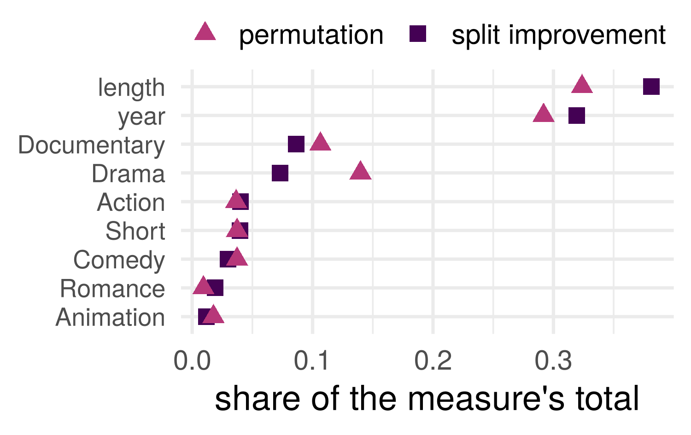
Each has pros/cons, no satisfactory answer for dependence
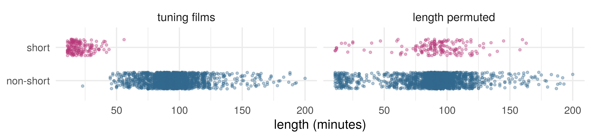
Shuffling length keeps each film’s other inputs: 149 of the 166 shorts now run over an hour, and 147 non-shorts under 40 minutes. Before: 0 and 1; in the 5,000 training films, 4 and 2
The forest’s predictions there rest on almost no data, and permutation importance averages over them (Hooker, Mentch and Zhou 2021)
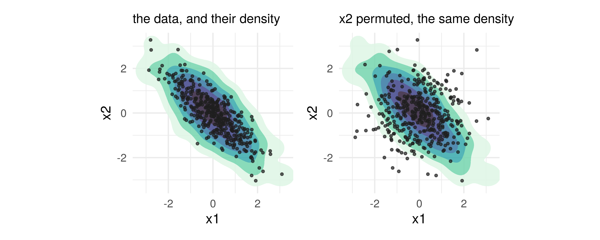
Where the data’s density is below 0.01: 20% of the permuted points, 2% of the data
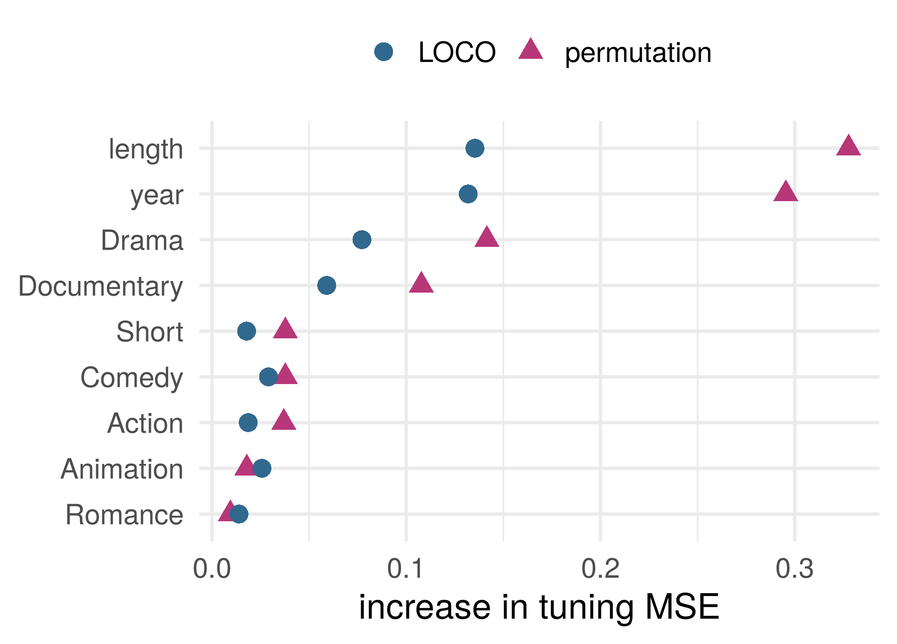
Refit without input \(j\), with the same settings; score on the same held-out films (Lei et al. 2018): \[\mathrm{LOCO}_j = \widehat{\mathrm{Err}}\big(\hat f^{(-j)}\big) - \widehat{\mathrm{Err}}(\hat f)\]
No extrapolation from permuting; any method, at the cost of \(p\) refits
Length and Short together: 0.21, more than length alone and Short alone added up (0.14 + 0.02). Each stands in for part of the other
But consider, Alfred North Whitehead wrote (1911):
It is a profoundly erroneous truism, repeated by all copy-books and by eminent people when they are making speeches, that we should cultivate the habit of thinking of what we are doing. The precise opposite is the case. Civilization advances by extending the number of important operations which we can perform without thinking about them.
This week: exercises 1 and 2 at the top of the notebook. The correlated-average variance again, with the slides closed; and one boosting step by hand
In the seminar: a split found by hand, bagging’s variance measured against the formula, and partial dependence and LOCO on the films
One curve per input, each fitted to what the others leave: partialling out, one input at a time
A plot of one input at a time, works most naturally with additive models, can be importantly wrong otherwise
Greedy questions, pruned by validation. Bagging and forests average trees to lower variance; boosting adds small trees, gradient descent on the fitted values
How much does the model suffer if a feature is scrambled (permuted) or left out before fitting?
ST310 Machine Learning